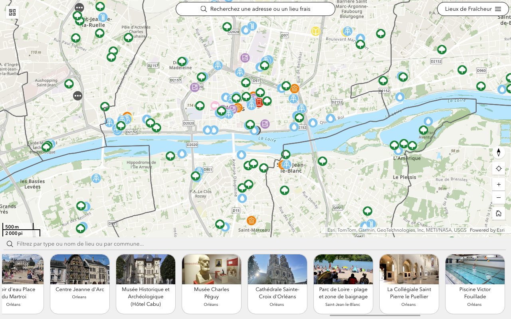
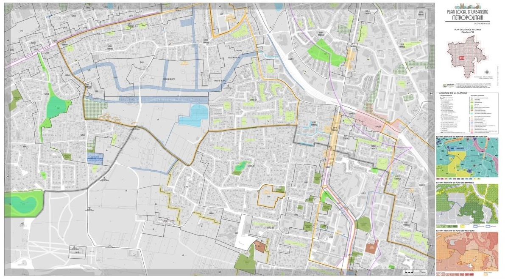
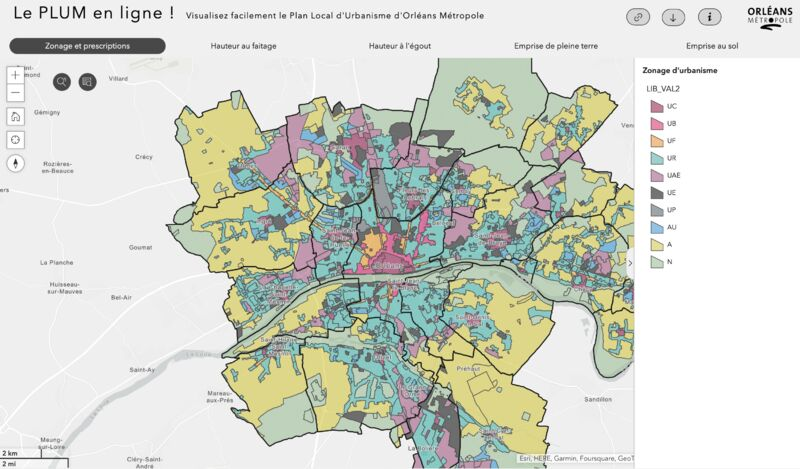
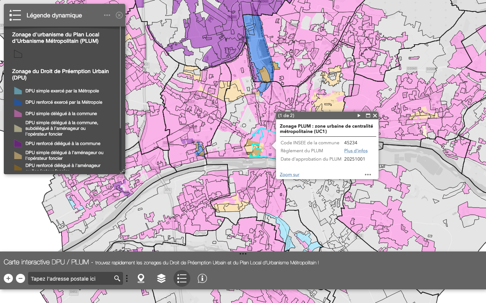
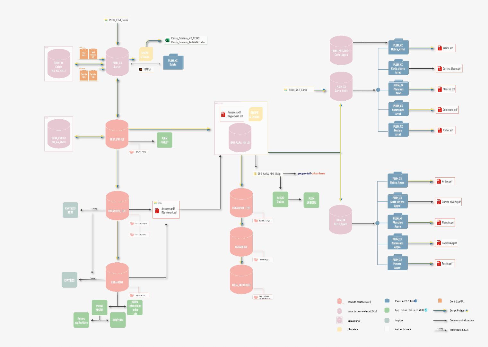
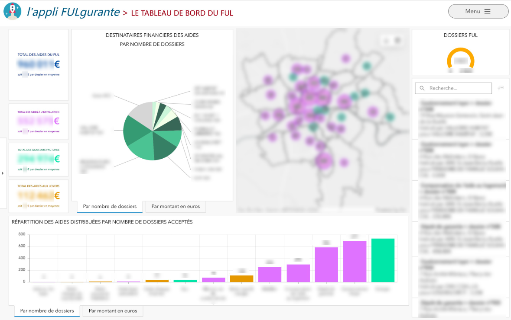
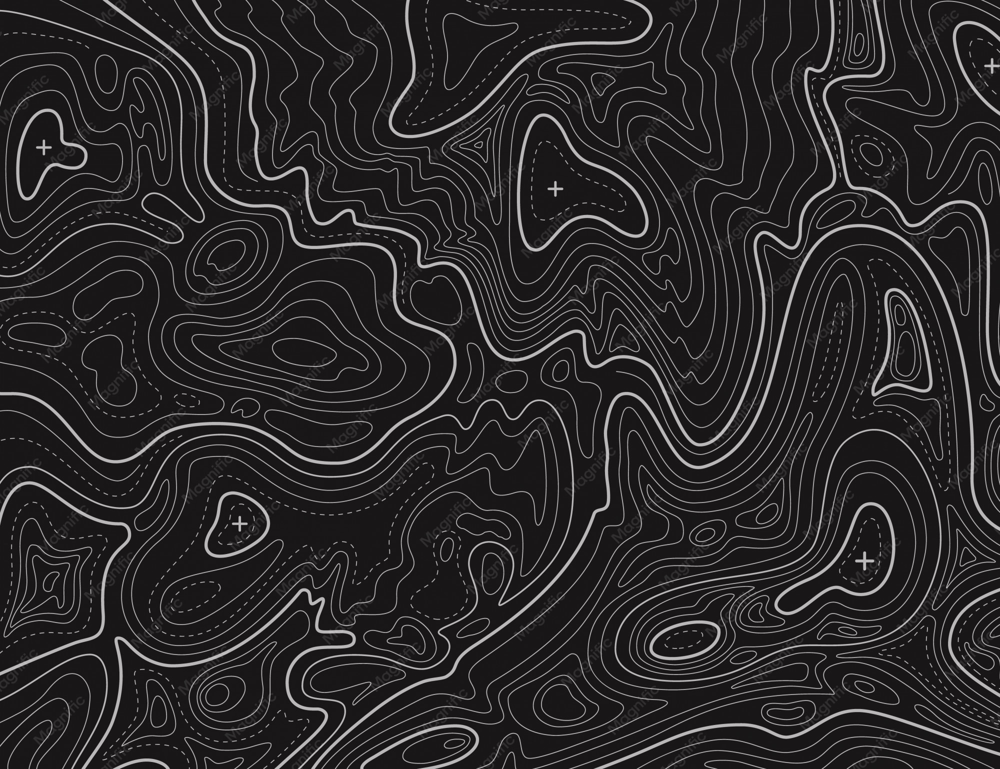

Réalisations
Articles de presse interne et applications cartographiques réalisées autour du Plan Local d'Urbanisme Métropolitain.

Permet de localiser, mettre à jour et exporter les lieux de fraicheur de la Métropole durant les vagues de chaleur.

Création des données PLUM au format CNIG, conception des planches pour l’approbation, publication et administration des données pour l’instruction dans Cart@ds

Permet de visualiser le contenu des planches du PLUM en vigueur et de s’y localiser facilement

Permet de connaitre rapidement le zonage du Droit de Préemption Urbain et le zonage du Plan Local d’Urbanisme

Travail d’optimisation et d’automatisations géomatiques avec python des procédures de modification du PLUM
Story-map regroupant la série de 8 publications Linkedin parues durant mon séjour dans la baie de SF.

Localise et analyse les dossiers d'aide du Fond Unifié Logement d'Orléans Métropole (accès confidentiel restreint au service).
